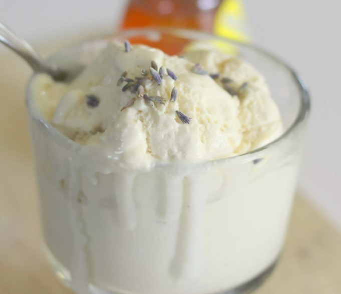

Lavendar Honey Ice Cream

Description
A sweet treat for you to eat!
This recipe comes from here.
Lavender and honey is a great combo and a perfect way to welcome the warming weather this Spring!
Ingredients
- 2 cups heavy whipping cream
- 1 cup half-and-half
- 2/3 cup Honey
- 2 tbls dried lavender flowers
- 2 eggs
- 1/8 tbls salt
Directions
- Heat heavy cream, half-and-half, honey, and lavender flowers in a heavy 2-quart saucepan, stirring occasionally, until cream just starts to bubble. Remove from heat and cover; let steep for 30 minutes.
- Strain cream mixture into a bowl using a fine-mesh sieve. Discard lavender flowers. Clean saucepan and pour strained cream mixture back in. Heat over medium heat until hot, about 5 minutes.
- Whisk eggs and salt together in a bowl. Whisk in 1 cup hot cream in a slow stream.
- Pour egg mixture into the remaining hot cream in the saucepan. Cook over medium-low heat, stirring constantly with a wooden spoon, until custard coats the back of the spoon and reads 175 degrees F (80 degrees C) on an instant-read thermometer, about 5 minutes./li>
- Pour custard through a fine-mesh sieve into a bowl. Let cool completely, stirring occasionally, about 15 minutes. Chill, covered, for at least 3 hours.
- Freeze custard in an ice cream maker according to manufacturer's instructions, about 20 minutes. Transfer to an airtight container and place in the freezer to firm up.